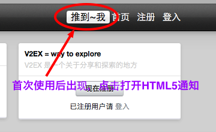
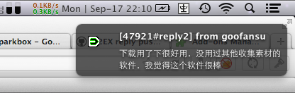
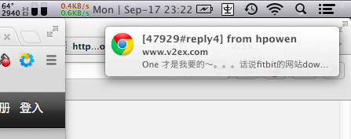

使用方法：
V2EX 通知推送 <— 拖拽到收藏栏
或者复制下面的内容存到收藏。
源码： https://gist.github.com/3737374
注意事项：
- 登录并打开V2EX提醒页面：http://www.v2ex.com/notifications
- 点击已经收藏的书签执行，程序会自动抓取到`页脚的`XML地址
- *首次* 使用需要点击准许浏览器使用HTML5 推送API
- 注：Chrome默认就有HTML 5 通知功能，Firefox需要安装一个插件 HTML Desktop Notifications 1.0.7
进阶使用：
- 使用
Mac 10.8以上的同学可以将浏览器的通知进一步push到Mac OS自带的通知中心 - Chrome 原生支持
- FF 需要经过 Growl 的配置
- 当然，如果你够折腾，用 Prowl 推送到iOS设备也是可以的，自己搞吧
补充：
- Firefox / Chrome 测试可用，IE绕道~
- 使用时可以打开 Firebug 或 Chrome 元素查看器 的Console查看执行情况
- 任何问题反馈 V2EX -> #47938 | Twitter -> @hzlzh
感谢 V2EX上@zythum 同学的图床程序，又好用，也给了本程序布局的参考。
本程序只是闲来HTML5练手，方便小众，有待完善。
使用截图：
首次点击书签后会出现下图按钮
火狐下使用截图
Chrome下使用截图
程序思路：
使用V2EX自带 jQuery Ajax 同域请求 XML 文件，之后解析此文件，保存当前时间戳。设置守护程序每 5秒运行一次，发现时间戳改变即 Push 最新一条回复到 浏览器的通知API